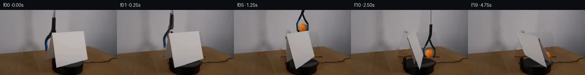

![首帧]()

Round 00
2026-11-04T19:14:01.595881+00:00像素候选变化代码 +262/−0inspection 更新
pixels 3f5a70b6bad212cf · code c39a965a623de042
查看本轮 generate.py 真实 diff
--- previous/generate.py
+++ current/generate.py
@@ -0,0 +1,262 @@
+"""Local pixel continuation: perspective textured planes and analytic layered drawing."""
+from pathlib import Path
+import json, math
+import numpy as np
+from PIL import Image, ImageDraw, ImageFilter
+import cv2
+from scipy.ndimage import gaussian_filter
+import artifact_io
+
+ROOT=Path(__file__).resolve().parent
+S=4; W=256; H=144
+src=np.array(Image.open(ROOT/'first_frame.png').convert('RGB'))
+yy,xx=np.mgrid[:H,:W]
+quad=np.float32([[113,51],[183,47],[194,111],[124,127]])
+support=np.float32([[111,55],[101,108],[124,103],[120,64]])
+
+def poly_mask(points, high=False):
+ fac=S if high else 1
+ m=Image.new('L',(W*fac,H*fac))
+ ImageDraw.Draw(m).polygon([tuple(float(v)*fac for v in p) for p in points],fill=255)
+ return np.array(m,dtype=np.float32)/255
+
+cardmask=poly_mask(quad)
+supmask=poly_mask(support)
+# Mask the original visible shaft and jaws; the tool is drawn behind the paper.
+toolpoly=np.float32([[115,-1],[121,-1],[121,16],[123,17],[122,42],[119,51],[111,59],[106,66],[106,91],[100,91],[97,78],[97,66],[102,57],[110,46],[113,34],[113,16],[115,15]])
+toolmask=poly_mask(toolpoly)
+initialmask=np.maximum.reduce([cardmask,supmask,toolmask])
+initialmask=cv2.dilate((initialmask*255).astype(np.uint8),np.ones((3,3),np.uint8))
+# Restore only the moving-object footprint using nearby wall and table samples.
+clean=cv2.inpaint(src,initialmask,5,cv2.INPAINT_TELEA)
+edge=np.where(xx<=192,97-17*xx/192,80+(xx-192)*35/64)
+wall=np.zeros_like(src,dtype=np.float64)
+for y in range(H):
+ left=src[min(y,77),87:95].mean(axis=0) if y>78 else src[y,87:95].mean(axis=0)
+ right=src[min(y,78),207:215].mean(axis=0)
+ f=np.clip((np.arange(W)-91)/120,0,1)[:,None]
+ # Broad illumination peak near the center is inherited from the source wall.
+ wall[y]=left*(1-f)+right*f+np.sin(np.pi*f)*4
+wood=np.zeros_like(src,dtype=np.float64)
+for y in range(H):
+ for x in range(W):
+ sx=206+(x-101)%38
+ sy=min(143,max(int(edge[y,x]+4),y+12))
+ wood[y,x]=src[sy,sx]
+wood=gaussian_filter(wood,(.5,.4,0))
+# Preserve subtle wood color and draw the missing turntable top under the old screen.
+fill=np.where((yy<edge)[...,None],wall,wood)
+zone=(initialmask>0)&((cardmask+supmask)>0)
+clean[zone]=np.clip(fill[zone],0,255).astype(np.uint8)
+clean_hi=np.array(Image.fromarray(clean).resize((W*S,H*S),Image.Resampling.LANCZOS),dtype=np.float32)
+base_hi=np.array(Image.fromarray(src).resize((W*S,H*S),Image.Resampling.LANCZOS),dtype=np.float32)
+# Reconstruct the occluded top of the stationary platform. Original visible pixels
+# of the cylinder are restored later, so its natural highlights stay intact.
+plat=Image.new('RGBA',(W*S,H*S))
+pd=ImageDraw.Draw(plat)
+pd.ellipse((111*S,106*S,186*S,130*S),fill=(17,15,12,255))
+pd.ellipse((114*S,108*S,184*S,126*S),fill=(25,23,21,255))
+pa=np.array(plat)
+platform_mask=((xx>=111)&(xx<=186)&(yy>=109)&(yy<=143)&(src.mean(axis=2)<48)).astype(np.float32)
+platform_mask*=1-np.maximum(cardmask,supmask)
+# Include source cylinder using its silhouette; contact with table remains source pixels.
+platform_mask_hi=cv2.resize(platform_mask,(W*S,H*S),interpolation=cv2.INTER_LINEAR)
+
+# A calibrated homography yields a physically consistent camera-plane coordinate system.
+world=np.float32([[-.5,1],[.5,1],[.5,0],[-.5,0]])
+H0=cv2.getPerspectiveTransform(world,quad)
+focal=math.sqrt(49796.69350649397)
+K=np.array([[focal,0,128],[0,focal,72],[0,0,1]],float)
+B=np.linalg.inv(K)@H0
+scale=np.linalg.norm(B[:,1]);B/=scale
+origin=B[:,2];uaxis=B[:,0];vaxis=B[:,1]
+# Camera-space world up is tilted by the downward camera elevation.
+up=np.array([0.,-math.cos(math.radians(14)),-math.sin(math.radians(14))])
+pivot=np.array([(147-128)*origin[2]/focal,(118-72)*origin[2]/focal,origin[2]])
+
+def rotation(theta):
+ a=math.radians(theta);cross=np.array([[0,-up[2],up[1]],[up[2],0,-up[0]],[-up[1],up[0],0]])
+ return np.eye(3)*math.cos(a)+(1-math.cos(a))*np.outer(up,up)+math.sin(a)*cross
+
+def project(points):
+ p=np.asarray(points)@K.T
+ return p[:,:2]/p[:,2:]
+
+def plane_quad(theta, points=world):
+ camera=np.array([origin+uaxis*u+vaxis*v for u,v in points])
+ camera=(camera-pivot)@rotation(theta).T+pivot
… diff truncated; 175 more lines …